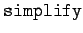
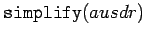
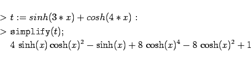
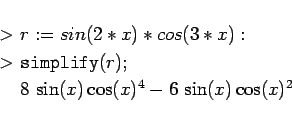
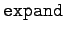
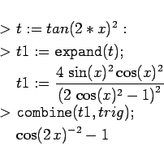
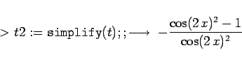

Inhalt Index DeskTop Bronstein

 Computeralgebrasysteme Anwendungen von Computeralgebrasystemen Manipulation algebraischer Ausdrücke Maple
Computeralgebrasysteme Anwendungen von Computeralgebrasystemen Manipulation algebraischer Ausdrücke Maple


Die in der folgenden Tabelle aufgeführten Operationen erlauben die Umformung algebraischer und transzendenter Ausdrücke mit rationalen und algebraischen Funktionen, die in Maple eingebaute oder selbstdefinierte Funktionen enthalten. In der Regel lassen sich dabei optionale Argumente angeben, die die Umformung unter bestimmten Bedingungen ausführen.
Der Befehl  kann hierfür exemplarisch eingesetzt werden. In der einfachen Form
 versucht Maple eingebaute Vereinfachungsregeln auf den Ausdruck anzuwenden.
| Beispiel |
|


|
Darüber hinaus existiert der Befehl , der im gewissen Sinne die Umkehrung von  ist.
| Beispiel |
|


|
Umformungen lassen sich auch mit Exponentialfunktionen, Logarithmus- und weiteren Funktionen wie etwa Besselfunktionen, Gammafunktionen und anderen durchführen.